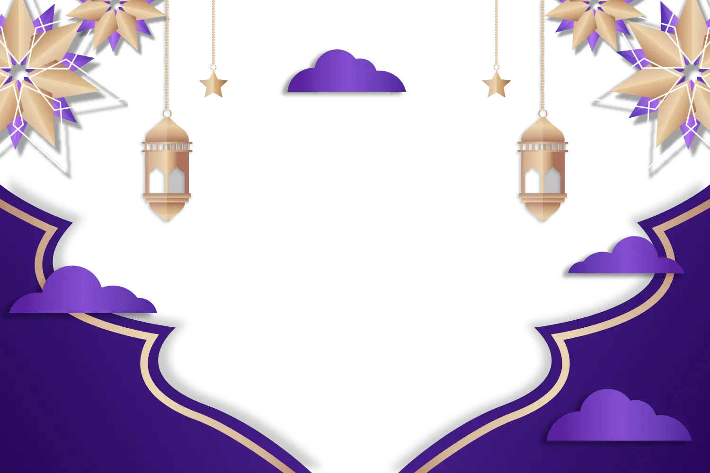
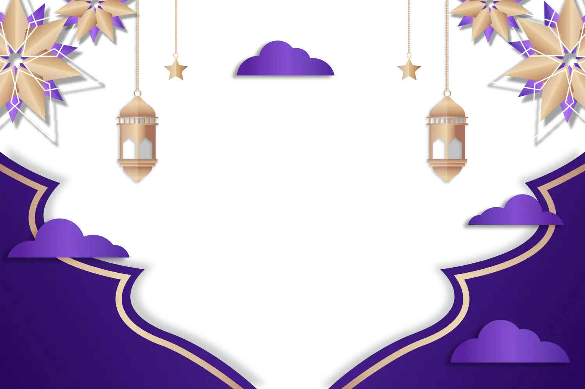
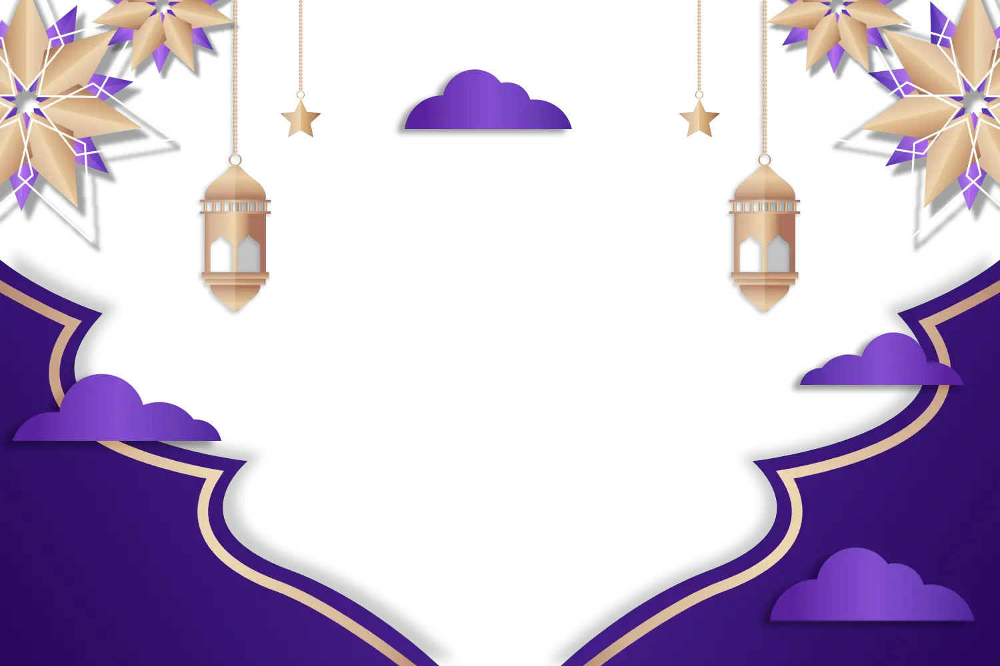
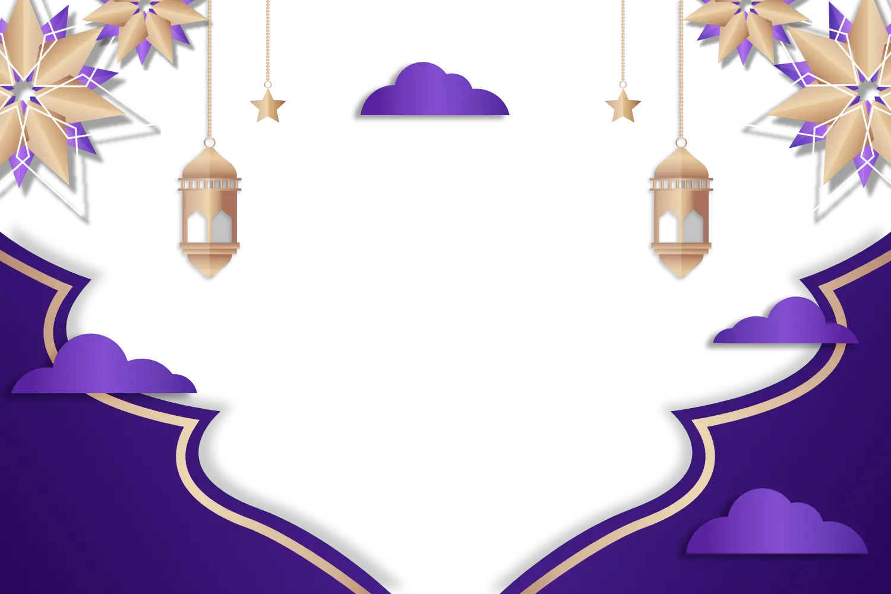

Anda sudah tahu apa yang wajib dilakukan semasa puaa. Tetapi, adakah puasa sekadar tahan lapar dan dahaga?.
Bulan Ramadan ialah bulan yang penuh dengan keberkatan. Umat Islam mempercayai pada bulan Ramadan, ada satu malam yang lebih baik dariapada seribu bulan iaitu Lailatulqadar atau Malam al-Qadar. Lailatulqadar atau Malam Qadar ialah satu malam dalam bulan Ramadan yang lebih baik daripada 1,000 bulan. Dipercayai sesiapa yang beramal pada malam tersebut, sama seperti "beramal selama 1,000 bulan, iaitu bersamaan 83 tahun 4 bulan.".
The tradition during Hari Raya Aidiladha involves slaughtering animals and dividing the meat into three equal parts - for family, for relatives and friends, and for the poor. The purpose is to ensure that every Muslim can eat meat.
Feel free to reach out! You can contact me at
ahmadsufi345@gmail.com
or
connect
with me on social media.